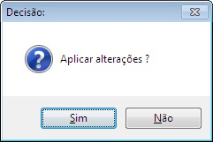
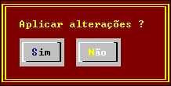

Emite mensagem para o usuário permitindo até 8 opções de decisão.
Send Message mensagem
[
CAPTION(1...8) texto-opção
]
[ OPTION
opção-default;opção-selecionada
]
[
OPTION-CHAR
mnemônico-da-opção-selecionada
]
[
TIMEOUT-ENABLE
| TIMEOUT-RETRY
| TIMEOUT-DISABLE
]
[
TIMEOUT-RETURN ;
retorno-tempo-limite-decorrido
]
Texto elucidativo de até 74 caracteres.
Texto de até 10 caracteres a ser exibido em cada push-button (até 8) sendo que o caractere "~" indica que o caractere seguinte servirá de mnemônico de atalho. Caso não haja texto declarado será exibido apenas um push-button com o texto "OK".
Valor ou variável que indica em qual dos 8 push-button deve estar o foco inicialmente.
Variável que receberá o retorno do número do
push-button selecionado pelo usuário, podendo retornar os
valores de 1 a 8 ou zero caso seja teclado
Escape.
mnemônico-da-opção-selecionada
Variável
de um byte que recebe o caractere declarado como tecla de atalho da
opção.
TIMEOUT-ENABLE
Habilita a terminação por tempo de ociosidade decorrido. A opção default será automaticamente selecionada pelo sistema em função do limite de ociosidade declarado na configuração.
Habilita 5 segundos de espera para mensagens de comentários sem maiores consequências. O processamento poderá prosseguir mesmo sem a intervenção ou conhecimento do usuário.
A intervenção do usuário será obrigatória. O processamento só prosseguirá ao ser selecionado um push-button manualmente.
retorno-tempo-limite-decorrido
Variável que receberá o retorno indicativo da ocorrência de limite de tempo decorrido (1 ou zero) caso o usuário tenha selecionado uma opção manualmente.
A acentuação deve ser codificada com a página de código 850. Os processadores de tela se encarregam de traduzir para o codificação apropriada a plataforma de execução.
|
Codificação COBOL |
|
EXEC COBOLware Send
Message "Aplicar
alterações" |
|
Efeito no modo gráfico. |
|
 |
|
Efeito no modo texto |
|
 |